VNCTF2021
1
[VNCTF 2021]冰冰好像藏着秘密
发现冰冰藏着的flag，flag格式为VNCTF{*}
得到FFT.rar
但是直接打开会提示
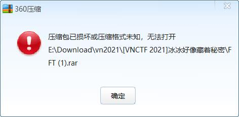
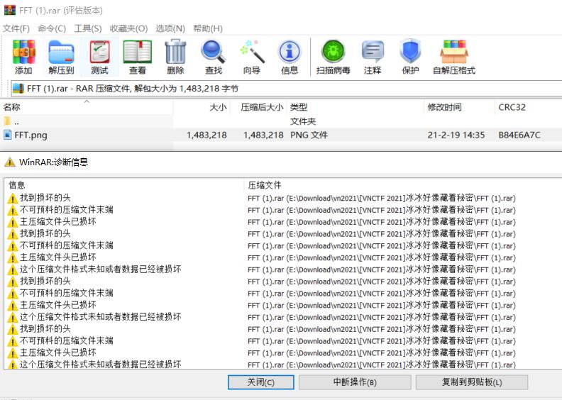
这个存在一个考察的点：rar伪加密
但是在实战中笔者发现两个绕过的方法
1)用kali打开
2)如上图图二所示，在winrar报错的情况下，直接拖出FFT.png，也能达到解压的效果
而按出题人本身的意思，是在使用010打开的情况下：
把下图的84改成80
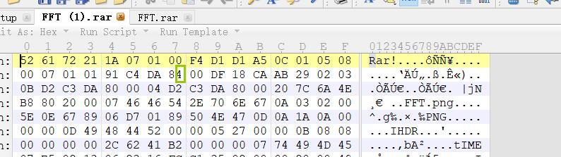
第二步：
1)隐形水印工具也能得到水印：
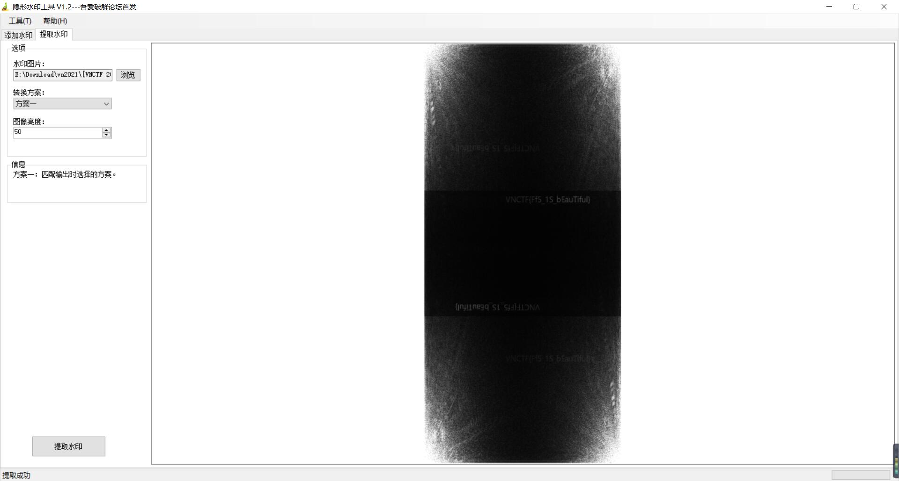
放大可以看到flag
2)通过搜索得知文件名FFT为：
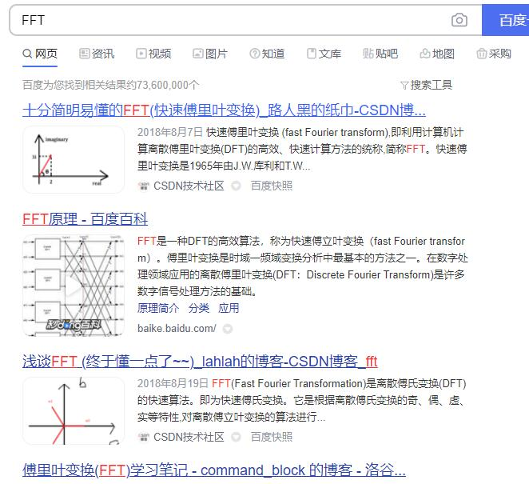
下面是大佬脚本：
import cv2 as cv |
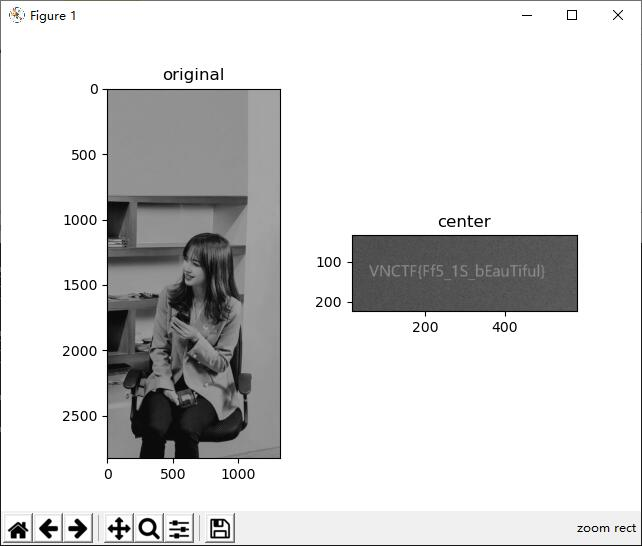
VNCTF{Ff5_1S_bEauTiful} |
2
[VNCTF 2021]HAPPYNEWYEAR
祝大家牛年快乐！牛转钱坤！(flag为VNCTF{}）Hint1:https://www.dcode.fr/tools-list#symbols Hint2:stegpy，但是不是那么白给的stegpy
得到加密压缩包和password.png
可以看出png里藏着古典密码，结合hint1，找到相应的加密方法：
Chinese Code&Sheikah Language
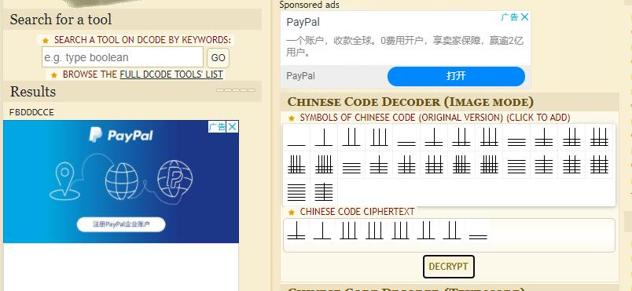
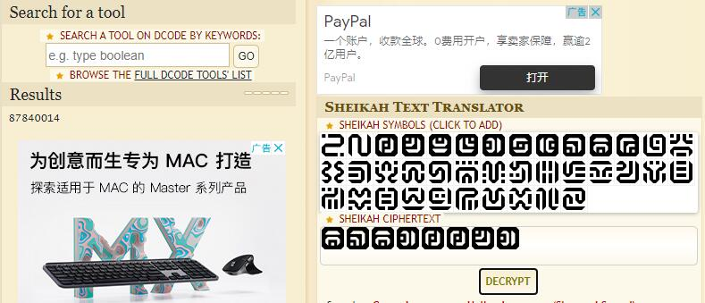
组合得到压缩包密码：
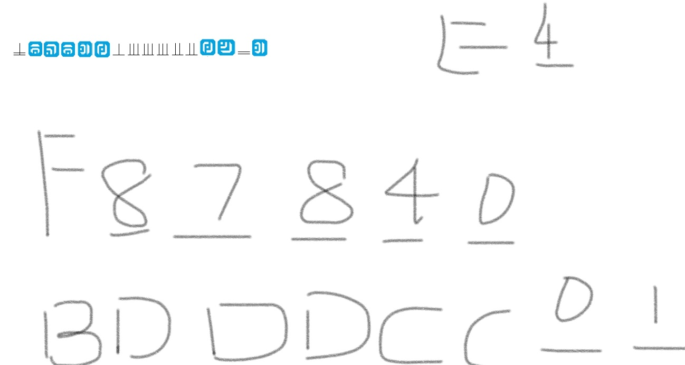
f87840bdddcc01e4 |
打开压缩包，得到happynewyear.png
接下来就是stegpy的内容
stegpy工具的安装：
https://blog.csdn.net/weixin_45728976/article/details/109018040
附上改动后的出题人脚本，实现爆破
# -*- coding: utf-8 -*- |
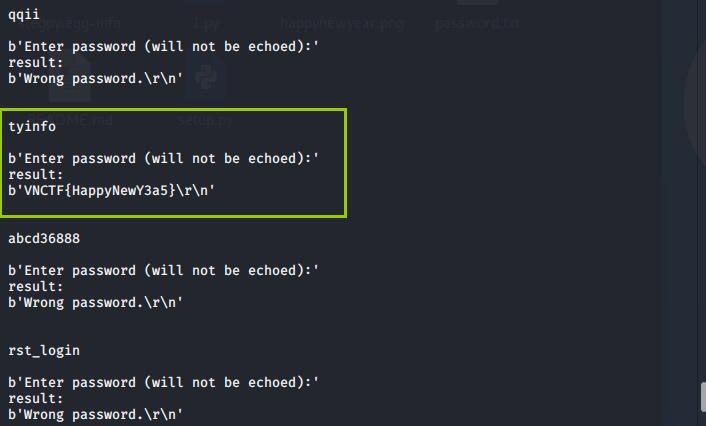
得到flag
VNCTF{HappyNewY3a5} |
3
[VNCTF 2021]interesting_fishing
crazyman_army是某安全公司的研究人员
这天他的其邮箱里发现了一封奇怪的邮件
你能帮助他找到其隐藏的信息吗
附件是第一部分的flag
图片是第二部分的flag
最后flag为 第一部分+第二部分(vnctf{*})
注释.txt:
crazyman_army是某安全公司的研究人员 |
研究项目的讨论.bin
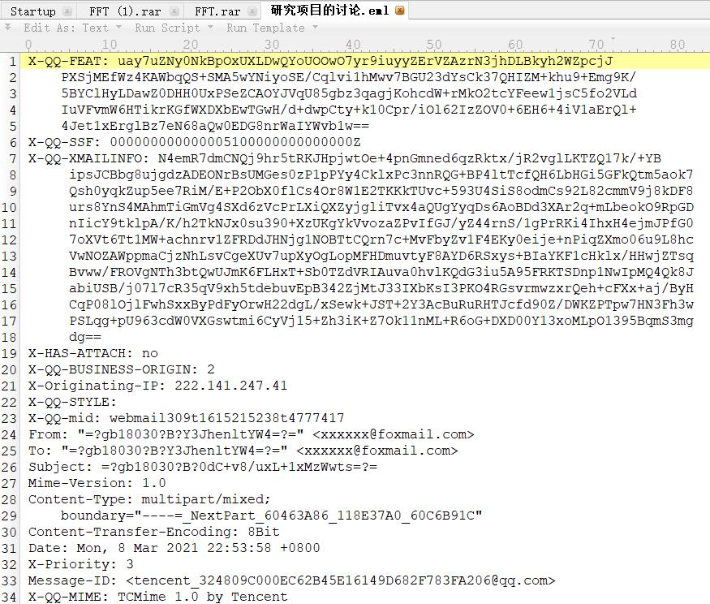
更改后缀为.eml，能看到是一封邮件。
用foxmail打开
就可以把图片和附件另存为到本机了。
先处理附件：
发现giveyourflag.sln，用vs打开
|
Visual Studio2017>生成>生成giveyourflag
若出现【无法找到v142的生成工具(平台工具集=“v142”)。】，Visual Studio2017>项目>giveyourflag属性>配置属性>常规>平台工具集>【v142(未安装)】更改为【Visual Studio 2017 (v141)】
重新生成后的得到报错【命令"powershell -exec bypass -w hi"dd"en -f x64\Debug\Browse.VC.db】
缺少上述文件，但在压缩包里找不到。
可能是文件隐藏。
系统搜索【文件资源管理器选项】>查看>取消勾选”隐藏受保护的操作系统文件(推荐)“
看到该文件。
$encodestring = "XAB1AC0ANgA1ADQAMwAyAD8AXAB1AC0ANgA1ADQAMgAwAD8AXAB1AC0ANgA1ADQAMgAwAD8AXAB1AC0ANgA1ADQAMgA0AD8AXAB1AC0ANgA1ADQAMgAxAD8AXAB1AC0ANgA1ADQANwA4AD8AXAB1AC0ANgA1ADQAOAA5AD8AXAB1AC0ANgA1ADQAOAA5AD8AXAB1AC0ANgA1ADQAMQA4AD8AXAB1AC0ANgA1ADQAMgA2AD8AXAB1AC0ANgA1ADQAMwA3AD8AXAB1AC0ANgA1ADQAMgAwAD8AXAB1AC0ANgA1ADQAMwA0AD8AXAB1AC0ANgA1ADQAOQAxAD8AXAB1AC0ANgA1ADQAOAA2AD8AXAB1AC0ANgA1ADQAOAA3AD8AXAB1AC0ANgA1ADQAOAA1AD8AXAB1AC0ANgA1ADQAOQAxAD8AXAB1AC0ANgA1ADQAOAA3AD8AXAB1AC0ANgA1ADQAOAA2AD8AXAB1AC0ANgA1ADQAOAAzAD8AXAB1AC0ANgA1ADQAOAAxAD8AXAB1AC0ANgA1ADQAOAA4AD8AXAB1AC0ANgA1ADQAOAAyAD8AXAB1AC0ANgA1ADQAOAA3AD8AXAB1AC0ANgA1ADQAOAA3AD8AXAB1AC0ANgA1ADQAOAA2AD8AXAB1AC0ANgA1ADQAOAA1AD8AXAB1AC0ANgA1ADQAOQAwAD8AXAB1AC0ANgA1ADQAMwA3AD8AXAB1AC0ANgA1ADQAMgA1AD8AXAB1AC0ANgA1ADQAMgAxAD8AXAB1AC0ANgA1ADQAOQAwAD8AXAB1AC0ANgA1ADQAMwA5AD8AXAB1AC0ANgA1ADQAMgA0AD8AXAB1AC0ANgA1ADQAOQAxAD8AXAB1AC0ANgA1ADQAMgA2AD8AXAB1AC0ANgA1ADQAMwA5AD8AXAB1AC0ANgA1ADQAMgA2AD8AXAB1AC0ANgA1ADQAMwAwAD8AXAB1AC0ANgA1ADQAMwAxAD8AXAB1AC0ANgA1ADQAMgA2AD8AXAB1AC0ANgA1ADQAMwAzAD8AXAB1AC0ANgA1ADQAOQAwAD8AXAB1AC0ANgA1ADQAMgA3AD8AXAB1AC0ANgA1ADQAMQA1AD8AXAB1AC0ANgA1ADQAMgAzAD8AXAB1AC0ANgA1ADQAMwA3AD8AXAB1AC0ANgA1ADQAMgA4AD8AXAB1AC0ANgA1ADQAMgA1AD8AXAB1AC0ANgA1ADQAMQA5AD8AXAB1AC0ANgA1ADQAMwA2AD8AXAB1AC0ANgA1ADQAOQAwAD8AXAB1AC0ANgA1ADQAMwA3AD8AXAB1AC0ANgA1ADQAMgA1AD8AXAB1AC0ANgA1ADQAMgA3AD8AXAB1AC0ANgA1ADQAOAA5AD8AXAB1AC0ANgA1ADQANQA2AD8AXAB1AC0ANgA1ADQAMQA1AD8AXAB1AC0ANgA1ADQAMgA1AD8AXAB1AC0ANgA1ADQAMgA2AD8AXAB1AC0ANgA1ADQAMwAzAD8AXAB1AC0ANgA1ADQAMQA1AD8AXAB1AC0ANgA1ADQAMwA5AD8AXAB1AC0ANgA1ADQAMgA2AD8AXAB1AC0ANgA1ADQAMwAzAD8AXAB1AC0ANgA1ADQAOQA5AD8AXAB1AC0ANgA1ADQAOAA2AD8AXAB1AC0ANgA1ADQAOAA4AD8AXAB1AC0ANgA1ADQAMgAxAD8AXAB1AC0ANgA1ADQAMgAwAD8AXAB1AC0ANgA1ADQAMgA1AD8AXAB1AC0ANgA1ADQAMgAyAD8AXAB1AC0ANgA1ADQAMwA1AD8AXAB1AC0ANgA1ADQAMgAxAD8AXAB1AC0ANgA1ADQAOQA5AD8AXAB1AC0ANgA1ADQAOAA2AD8AXAB1AC0ANgA1ADQAOAA4AD8AXAB1AC0ANgA1ADQAMgA4AD8AXAB1AC0ANgA1ADQAMgA1AD8AXAB1AC0ANgA1ADQAMQA3AD8AXAB1AC0ANgA1ADQAOQA5AD8AXAB1AC0ANgA1ADQAOAA2AD8AXAB1AC0ANgA1ADQAOAA4AD8AXAB1AC0ANgA1ADQAMgA1AD8AXAB1AC0ANgA1ADQAMgA2AD8AXAB1AC0ANgA1ADQAOQA5AD8AXAB1AC0ANgA1ADQAOAA2AD8AXAB1AC0ANgA1ADQAOAA4AD8AXAB1AC0ANgA1ADQAMwA0AD8AXAB1AC0ANgA1ADQAMgA1AD8AXAB1AC0ANgA1ADQAMgAyAD8AXAB1AC0ANgA1ADQAMwA1AD8AXAB1AC0ANgA1ADQAMwAxAD8AXAB1AC0ANgA1ADQAMwAzAD8AXAB1AC0ANgA1ADQAMgA2AD8AXAB1AC0ANgA1ADQAOQA5AD8AXAB1AC0ANgA1ADQAOAA2AD8AXAB1AC0ANgA1ADQAOAA4AD8AXAB1AC0ANgA1ADQAMwAzAD8AXAB1AC0ANgA1ADQAMgA1AD8AXAB1AC0ANgA1ADQAMgA1AD8AXAB1AC0ANgA1ADQAMwA2AD8AXAB1AC0ANgA1ADQAMgAxAD8AXAB1AC0ANgA1ADQAOQA5AD8AXAB1AC0ANgA1ADQAOAA2AD8AXAB1AC0ANgA1ADQAOAA4AD8AXAB1AC0ANgA1ADQAMwA5AD8AXAB1AC0ANgA1ADQAMgA3AD8AXAB1AC0ANgA1ADQAMwAxAD8AXAB1AC0ANgA1ADQAMwA2AD8AXAB1AC0ANgA1ADQAOQA5AD8AXAB1AC0ANgA1ADQAOAA2AD8AXAB1AC0ANgA1ADQAOAA4AD8AXAB1AC0ANgA1ADQANQA4AD8AXAB1AC0ANgA1ADQAMgA1AD8AXAB1AC0ANgA1ADQAMgAyAD8AXAB1AC0ANgA1ADQAMgAwAD8AXAB1AC0ANgA1ADQAMwAyAD8AXAB1AC0ANgA1ADQAOQA5AD8AXAB1AC0ANgA1ADQAOAA2AD8AXAB1AC0ANgA1ADQAOAA4AD8AXAB1AC0ANgA1ADQANgAxAD8AXAB1AC0ANgA1ADQAMgA1AD8AXAB1AC0ANgA1ADQAMgAyAD8AXAB1AC0ANgA1ADQAMwA1AD8AXAB1AC0ANgA1ADQAMwA5AD8AXAB1AC0ANgA1ADQAMgA2AD8AXAB1AC0ANgA1ADQAOQA5AD8AXAB1AC0ANgA1ADQAOAA2AD8AXAB1AC0ANgA1ADQAOAA4AD8AXAB1AC0ANgA1ADQANgA5AD8AXAB1AC0ANgA1ADQANQA3AD8AXAB1AC0ANgA1ADQANQAwAD8AXAB1AC0ANgA1ADQANgAzAD8AXAB1AC0ANgA1ADQANgA4AD8AXAB1AC0ANgA1ADQAOQAxAD8AXAB1AC0ANgA1ADQAOAA3AD8AXAB1AC0ANgA1ADQANwA5AD8AXAB1AC0ANgA1ADQAOQA5AD8AXAB1AC0ANgA1ADQAOAA2AD8AXAB1AC0ANgA1ADQAOAA4AD8AXAB1AC0ANgA1ADQAMgA0AD8AXAB1AC0ANgA1ADQAMwA5AD8AXAB1AC0ANgA1ADQAMgAyAD8AXAB1AC0ANgA1ADQAMwA5AD8AXAB1AC0ANgA1ADQAMgA2AD8AXAB1AC0ANgA1ADQAMgA1AD8AXAB1AC0ANgA1ADQAMwAxAD8AXAB1AC0ANgA1ADQAMwA5AD8AXAB1AC0ANgA1ADQAOQAwAD8AXAB1AC0ANgA1ADQAMgAyAD8AXAB1AC0ANgA1ADQAMwA5AD8AXAB1AC0ANgA1ADQAMgAyAD8A" |
根据代码，cyberchef经过from base64操作后得到
RTF格式下的unicode编码
附上官方脚本：
s=r"\u-65432?\u-65420?\u-65420?\u-65424?\u-65421?\u-65478?\u-65489?\u-65489?\u-65418?\u-65426?\u-65437?\u-65420?\u-65434?\u-65491?\u-65486?\u-65487?\u-65485?\u-65491?\u-65487?\u-65486?\u-65483?\u-65481?\u-65488?\u-65482?\u-65487?\u-65487?\u-65486?\u-65485?\u-65490?\u-65437?\u-65425?\u-65421?\u-65490?\u-65439?\u-65424?\u-65491?\u-65426?\u-65439?\u-65426?\u-65430?\u-65431?\u-65426?\u-65433?\u-65490?\u-65427?\u-65415?\u-65423?\u-65437?\u-65428?\u-65425?\u-65419?\u-65436?\u-65490?\u-65437?\u-65425?\u-65427?\u-65489?\u-65456?\u-65415?\u-65425?\u-65426?\u-65433?\u-65415?\u-65439?\u-65426?\u-65433?\u-65499?\u-65486?\u-65488?\u-65421?\u-65420?\u-65425?\u-65422?\u-65435?\u-65421?\u-65499?\u-65486?\u-65488?\u-65428?\u-65425?\u-65417?\u-65499?\u-65486?\u-65488?\u-65425?\u-65426?\u-65499?\u-65486?\u-65488?\u-65434?\u-65425?\u-65422?\u-65435?\u-65431?\u-65433?\u-65426?\u-65499?\u-65486?\u-65488?\u-65433?\u-65425?\u-65425?\u-65436?\u-65421?\u-65499?\u-65486?\u-65488?\u-65439?\u-65427?\u-65431?\u-65436?\u-65499?\u-65486?\u-65488?\u-65458?\u-65425?\u-65422?\u-65420?\u-65432?\u-65499?\u-65486?\u-65488?\u-65461?\u-65425?\u-65422?\u-65435?\u-65439?\u-65426?\u-65499?\u-65486?\u-65488?\u-65469?\u-65457?\u-65450?\u-65463?\u-65468?\u-65491?\u-65487?\u-65479?\u-65499?\u-65486?\u-65488?\u-65424?\u-65439?\u-65422?\u-65439?\u-65426?\u-65425?\u-65431?\u-65439?\u-65490?\u-65422?\u-65439?\u-65422?" |
运行后得到
https://vnctf-213-1257061123.cos.ap-nanjing.myqcloud.com/Pyongyang%20stores%20low%20on%20foreign%20goods%20amid%20North%20Korean%20COVID-19%20paranoia.rar |
一个加密的压缩包，提示密码：
maskcode |
ARCHPR爆破无果。
得到一个工具Accent RAR Password Recovery，发现【编码与密码】的压缩包里有，只不过存在版本问题，附上下载链接：https://gd.jisuxz.com/down_new/accent_rar_password_recovery.rar
但因为是英文版，就添加了【编码与密码】里的chinese.lng，再运行.reg文件
同时根据https://www.muruoxi.com/pc/2253.html修复报错
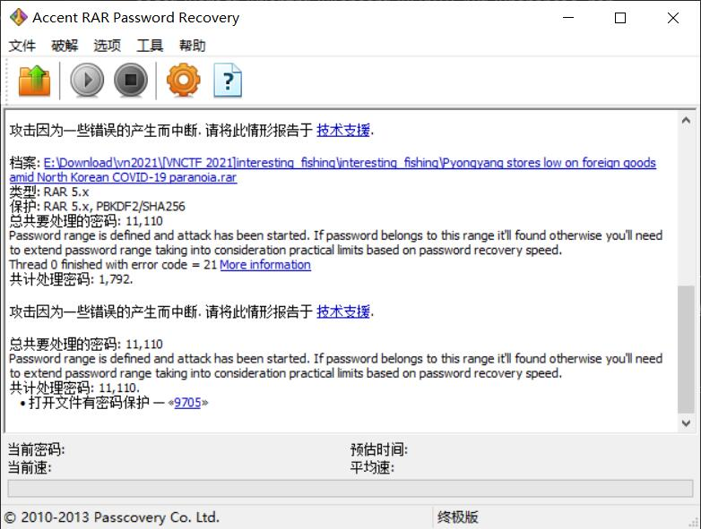
利用密码【9705】打开压缩包，得到Pyongyang stores low on foreign goods amid North Korean COVID-19 paranoia.docx
更改后缀名.zip
解压后打开word>hideinfo.xml
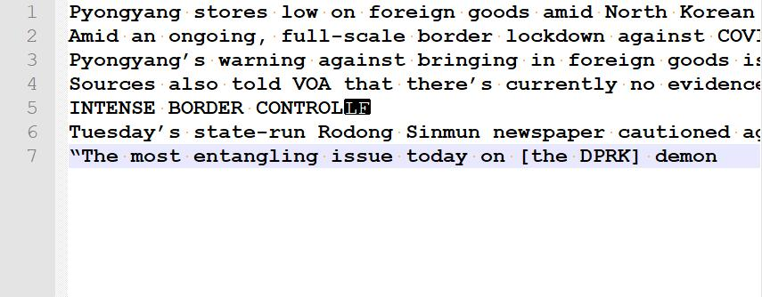
宽字符隐写得
vnctf{APT_1S_c0M1nG |
第二部分图片：
另存为ThisIsSecret.jpg
用工具OurSecret
解密下半部分
_fr0m_l@z@RuS} |
vnctf{APT_1S_c0M1nG_fr0m_l@z@RuS} |